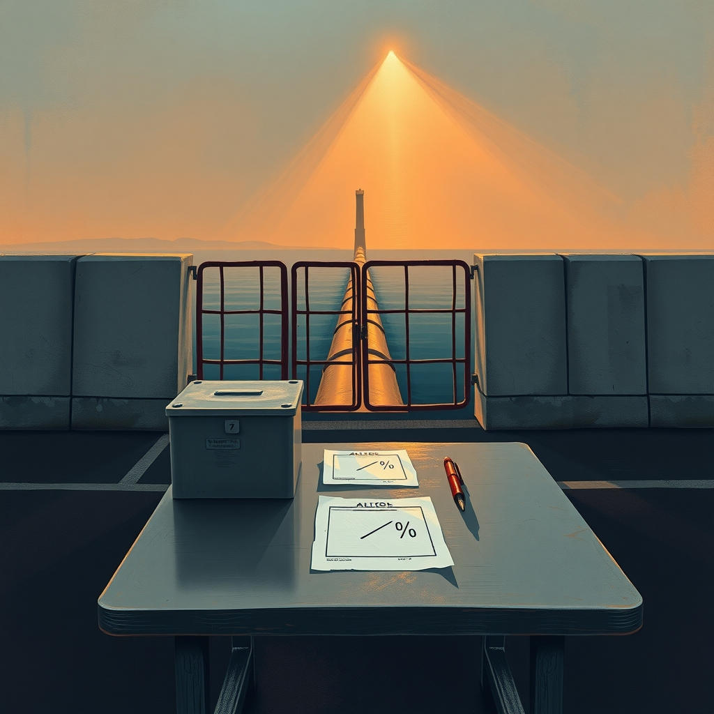
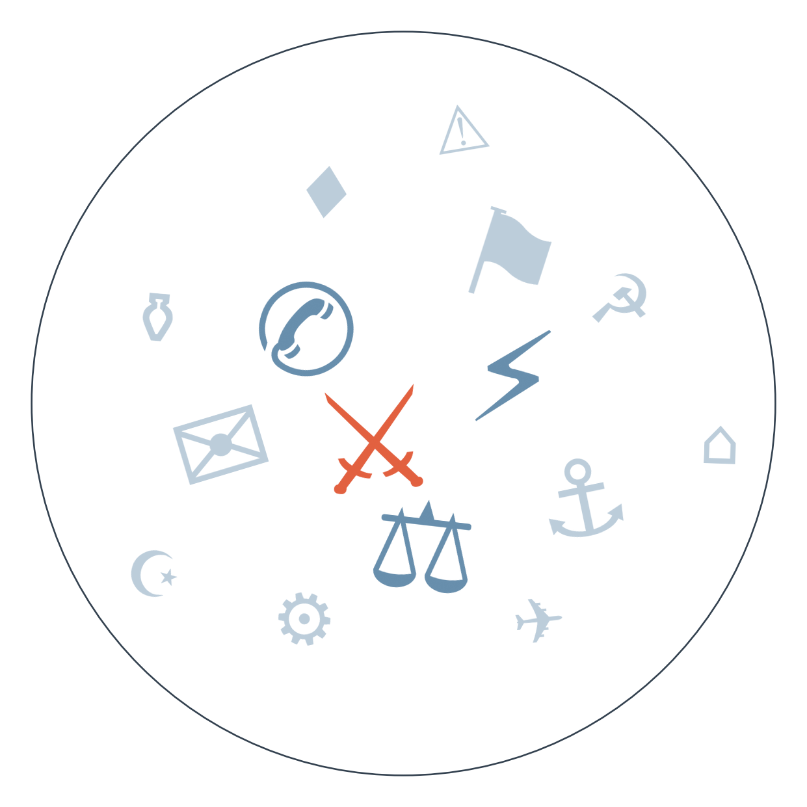

Ранковий бріф · огляд світової преси

Отже, головна новина ночі — Гренландія. Трамп оголосив, що США й Данія домовились: Вашингтон отримує «постійний контроль» над безпекою острова. Данія каже, що це партнерство зі збереженням суверенітету, Трамп — що це контроль «назавжди»; хто з них ближче до тексту угоди, ніхто не знає, бо самого документа ніхто не оприлюднив (докладніше — у РОЗКОЛІ ОПТИКИ).
Паралельно Трамп заборонив CNN, MSNBC (тепер MS NOW) і Politico доступ до Білого дому, звинувативши їх у постійному «фейк-ньюз», і пообіцяв, що список неугодних медіа може розширитися. Це перший випадок настільки прямого й офіційного бану провідних редакцій — і подають його по-різному навіть ті, хто формально по один бік Атлантики (детальніше — у РОЗКОЛІ ОПТИКИ).
Трамп також підписав закон Ліндсі Грема про санкції проти Росії й Ірана — той самий, який Конгрес ухвалив 262 голосами проти 159. Тепер під загрозою мита до 100% опиняються найбільші покупці російської нафти, зокрема Індія й Китай; Зеленський вже подякував за підпис, а індійська й китайська преса рахують збитки (сюжет триває майже місяць, горизонт 29.09 — чи витримає «енергоперемир'я»).
У Росії тим часом стартувало триденне голосування до Держдуми — без жодної антивоєнної партії в бюлетенях. Кремль явно розглядає ці вибори як демонстрацію одностайної підтримки війни, і за відсутності конкуренції результат передбачуваний ще до підрахунку (сюжет мілітаризації Держдуми, горизонт оголошення результатів — 20–21.09).
І ще одна новина з жертвами: у Пакистані смертник підірвав начинену вибухівкою машину біля поліцейського об'єкта й мечеті — за повідомленнями місцевих агентств загинули від 16 до 21 людини, серед них четверирічна дитина; точна цифра ще уточнюється, поки що невідомо й яке угруповання бере на себе відповідальність.

Сюжет 1: угода США–Данія щодо Гренландії
Замовчують: жодне західне джерело не публікує деталей самого тексту угоди; українське Suspilne прямо зазначає — документ не оприлюднено.
Чому розходяться: Копенгаген хоче показати власним виборцям і Нууку, що зберіг обличчя й територіальний суверенітет; Вашингтону вигідно подати це як передвиборчу перемогу «контролю» напередодні проміжних виборів у Конгресі; німецька преса дивиться на це крізь загальну втому від методів тиску Трампа на союзників; білоруська державна пропаганда воліє мовчати про оцінки, бо сам факт — зручна ілюстрація тези «навіть союзники США не убезпечені від Вашингтона».
Сюжет 2: бан CNN, MSNBC і Politico
Замовчують: жодне з проаналізованих джерел не наводить реакції самих CNN чи Politico; також жодне з них не займає протилежну, схвальну позицію щодо рішення — розбіжність тут швидше в тоні, ніж у самій оцінці.
Чому розходяться: австрійське громадське мовлення дотримується нейтральної інформаційної норми; хорватська й болгарська преса бачать тривожний прецедент для незалежної журналістики і використовують гострі формулювання свідомо; білоруська пропаганда мовчить про оцінку, бо для неї вигідніше просто зафіксувати факт без емоцій — сам контраст із риторикою Заходу про свободу преси працює краще за коментар.
16.09 Конгрес ухвалює пакет санкцій 262–159 → 18.09 Трамп підписує закон Грема, вводячи мита до 100% для покупців російської нафти. Паралельно 18–20.09 у Росії проходять заплановані вибори до Держдуми без антивоєнних партій, що демонструє відсутність готовності Кремля до поступок → обидва процеси разом підвищують ризик зриву «енергоперемир'я» до горизонту 29.09.
початок вересня КСІР атакує танкер → 16.09 міністр енергетики США заявляє про можливе відновлення трубопроводу Схід-Захід «протягом днів» (частково справдилось 18.09) → 18–19.09 нові атаки на танкери знову змушують саудівську нафту йти через протоку, влада оголошує незрозумілі попередження у семи регіонах країни → під сумнівом повне відновлення трубопроводу до горизонту 30.09.
18.09 чеські Gripen піднімаються через загрозу дронів біля польського кордону, Макрон публічно заявляє про посилення гібридних атак (див. також ПУЛЬС: Франція) → паралельно представник Кремля, за даними лише двох балтійських видань (див. РАДАР), готує на 2027 рік переговори з АфД про газ до Німеччини (див. також ПУЛЬС: Німеччина) → веде до поглиблення розколу всередині Європи між лінією стримування і лінією економічного зближення через праві партії.
Санкційний закон США офіційно набув чинності — мита до 100% для найбільших покупців російської нафти виходять за межі суто санкційної політики й зачіпають торговельні відносини з Індією та Китаєм (див. ГОЛОВНЕ).
Volkswagen опинився в кризі на $11,5 млрд через тиск китайських автовиробників (за Handelsblatt) — удар по європейському автопрому.
Brent залишається під тиском нових атак на танкери в Ормузькій протоці (див. ЩО З ЧОГО ВИПЛИВАЄ); аналітик Kpler раніше прогнозував подальше зростання цін через дефіцит дизелю.
За оцінками галузевих оглядачів, дизельне пальне у США наближається до цінових рекордів напередодні жнив, що може вдарити по вартості продовольства цієї осені.
Поки якісна преса підбирає слова для «постійного контролю» над Гренландією, Bild святкує старт Октоберфесту і сперечається за 17 центів пального — політика для нього сьогодні другорядна.
Польський Fakt тим часом розганяє заголовок «Москва оголосила, що Польщі вже немає» — по суті переказ російської пропагандистської риторики, поданий як кримінальна сенсація, а не як зовнішньополітичний факт.
Індійський Times Now ставить новину про продовження збору $100 000 за візи H-1B в один ряд із гороскопами і скандалом навколо корейського серіалу — серйозний економічний удар тоне в розважальній стрічці.
Підписаний закон про санкції (100% мита на покупців російської нафти) посилює тиск на фінансування війни РФ, хоч ефект розтягнутий у часі через процедуру визначення торговельним представником США (див. ГОЛОВНЕ).
ЄС виділив €3,3 млрд на українські дрони (див. ПУЛЬС), але загальний розрив у фінансуванні на «важку зиму» лишається невирішеним — питання постане гостріше з настанням холодів.
Розкриття Туском даних про втрати ЗСУ (див. РАДАР) може ускладнити довіру між Києвом і союзниками саме тоді, коли триває розподіл нового пакета допомоги.
Реальні втрати США у війні з Іраном лишаються неясними: офіційні дані Пентагону розходяться з оцінками окремих медіа, але походження й точність цих цифр поки не перевірені окремо. Мовчить сама американська адміністрація — пояснень розбіжності немає, і тема зручно тоне на тлі гучнішого сюжету про Гренландію.
Масова смерть 37 людей під вартою в Нігері згадана лише у France 24 — решта західної преси мовчить, ймовірно тому, що тема вимагає окремого розслідування в країні з обмеженим доступом журналістів, а увагу редакцій забрали Гренландія й бан медіа.
Криза Volkswagen на $11,5 млрд через китайську конкуренцію обговорюється практично виключно в діловій пресі (Handelsblatt) — тема витіснена гучнішими сюжетами про Гренландію і бан медіа, хоча йдеться про можливі десятки тисяч робочих місць у Європі.
Представник Кремля Дмитрієв готує на 2027 рік переговори з АфД про відновлення постачання газу до Німеччини — сигнал можливого розколу німецької енергетичної політики. На чому ґрунтується: два прибалтійських джерела (LSM, 15min), більше ніхто не підтверджує.
Трамп зважує відновлення масштабних ударів по Ірану, за версією Al Arabiya з посиланням на джерела — може означати новий виток війни попри щойно підписаний санкційний закон. На чому ґрунтується: одне джерело.
Розкриття Туском даних про втрати ЗСУ може означати наростання втоми союзників від інформаційної закритості Києва. На чому ґрунтується: одне видання (EUobserver), без підтверджень з інших джерел.
Наші:
Данія і США підпишуть офіційну угоду про безпеку Гренландії до 26.09.2026
ЄС на голосуванні 22.09 зніме блокування Франції й ухвалить рішення щодо санкційного списку, включно з питанням Усманова, до 22.09.2026
США завдадуть нового удару по об'єктах в Ірані до 03.10.2026
Кажуть інші:
Данія і Гренландія (за France 24): очікують підписати угоду з США на полях Генеральної асамблеї ООН наступного тижня.
Кремль (за Kommersant, переказ заяв Трампа): очікує підписання кількох угод між Трампом і Сі Цзіньпіном 24 вересня у Вашингтоні.
20–21.09 — очікується оголошення результатів триденних виборів до Держдуми РФ.
21–22.09 — Генеральна асамблея ООН у Нью-Йорку: виступи Трампа й Нетаньягу, можливе підписання гренландської угоди.
Базова лінія у прогнозах. Відсоток «базово» — це ймовірність події за інерцією, якщо ніхто нічого не робитиме й нічого не зміниться. Друге число — наша впевненість. Прогноз має сенс лише тоді, коли ці числа розходяться: збіг означає, що ми просто описали поточний стан.
Відсотки в карті уваги. Частка країни в денному обсязі зібраних матеріалів. Не показник важливості події, а показник того, скільки місця країна зайняла в новинному потоці за добу. Різкий стрибок частки зазвичай означає, що в країні щось відбувається.
Стрічки, які не відповіли. Не відповіли: Zerkalo, Euractiv, IRNA, Il Foglio, El Universal, Milenio.